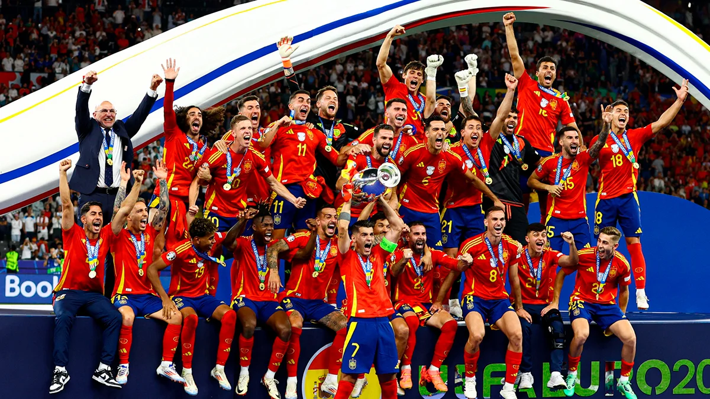

El Doblete de Oro y la Tetracampeona (2024)
La gesta histórica obtenida por el fútbol español en el verano de 2024 no solo supuso el primer "Doblete de Oro" masculino de nuestra historia al conquistar la Eurocopa de Alemania y los Juegos Olímpicos de París en apenas un mes, sino que transformó por completo la mentalidad del fútbol nacional, demostrando que España podía volver a reinar en el planeta con una propuesta de juego modernizada, vertical, letal y repleta de juventud.
- El Camino Perfecto: España firmó un torneo inmaculado en la Eurocopa de Alemania, logrando un hito sin precedentes en la historia del fútbol europeo al ganar los siete partidos disputados. Superó con autoridad a Croacia, Italia y Albania en la fase de grupos, arrolló a Georgia en octavos, y derribó de forma consecutiva a tres gigantes y campeonas del mundo —Alemania en cuartos, Francia en semifinales e Inglaterra en la final— para coronarse campeona invicta.
- Épica en Berlín y París: El doblete se consagró en dos escenarios de máxima tensión. El 14 de julio en Berlín, Mikel Oyarzabal desató la locura en el minuto 86 al anotar el definitivo 2-1 ante Inglaterra, convirtiendo a España en la primera tetracampeona de Europa. Menos de un mes después, el 9 de agosto en el Parque de los Príncipes de París, la selección olímpica firmó una prórroga legendaria ante la anfitriona Francia, donde Sergio Camello anotó un doblete épico para sellar un espectacular 5-3 y colgarse el oro 32 años después de Barcelona 92.
- La Generación del "Rock & Roll": El éxito absoluto estuvo liderado por Luis de la Fuente en la absoluta y Santi Denia en la olímpica, quienes aparcaron el juego horizontal para apostar por la velocidad y el desborde. El bloque se estructuró bajo el timón de Rodri Hernández (MVP de la Eurocopa) y la contundencia de Fabián Ruiz, dinamitado por la electricidad de los jovencísimos extremos Lamine Yamal y Nico Williams. En la cita olímpica, el liderazgo recayó en figuras de la talla de Fermín López, Álex Baena, Eric García y Arnau Tenas.
- Máxima Eficacia: Ambas selecciones se caracterizaron por un equilibrio perfecto entre la posesión inteligente y una pegada letal en las áreas. Dani Olmo se erigió como uno de los máximos artilleros de la Eurocopa con 3 goles cruciales y asistencias clave, mientras que Fermín López completó un verano antológico al coronarse como el rey del torneo olímpico con 6 goles, incluidos dos zarpazos definitivos en la gran final ante Francia.
- La Identidad: Este doblete enterró definitivamente la nostalgia de la generación del 'Tiki-Taka' para fundar un estilo propio adaptado al fútbol moderno: más físico, vertical, asociativo y letal al contragolpe. Convirtió la insultante juventud de una plantilla sin complejos en una máquina competitiva, devolviendo a España al trono del fútbol mundial y consolidando una estructura de éxito capaz de dominar todas las categorías del balompié internacional.
